In this vignette, we will demonstrate how to use the
HDAnalyzeR package to build classification models. We will
start by loading HDAnalyzeR and dplyr packages, widen the example
dataset and loading the metadata.
library(HDAnalyzeR)
library(dplyr)
wide_data <- widen_data(example_data)
metadata <- example_metadataFirst, let’s start with a regularized regression LASSO model via
do_rreg(). Exactly like in the previous vignette with the
differential expression functions, we have to state the case and
control(s) groups.
res <- do_rreg(wide_data, metadata, case = "AML", control = c("CLL", "MYEL", "GLIOM"))
res$hypopt_res$hypopt_vis
res$testfit_res$metrics
#> $accuracy
#> [1] 0.68
#>
#> $sensitivity
#> [1] 0.73
#>
#> $specificity
#> [1] 0.62
#>
#> $auc
#> [1] 0.67
#>
#> $conf_matrix
#> Truth
#> Prediction 0 1
#> 0 11 5
#> 1 4 8
#>
#> $roc_curve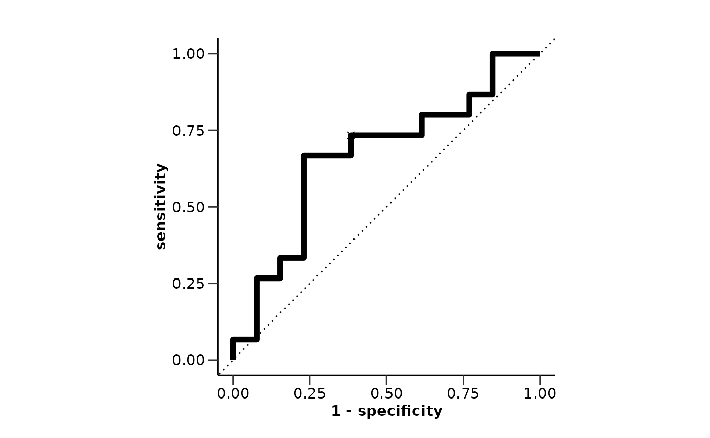
res$var_imp_res$var_imp_plot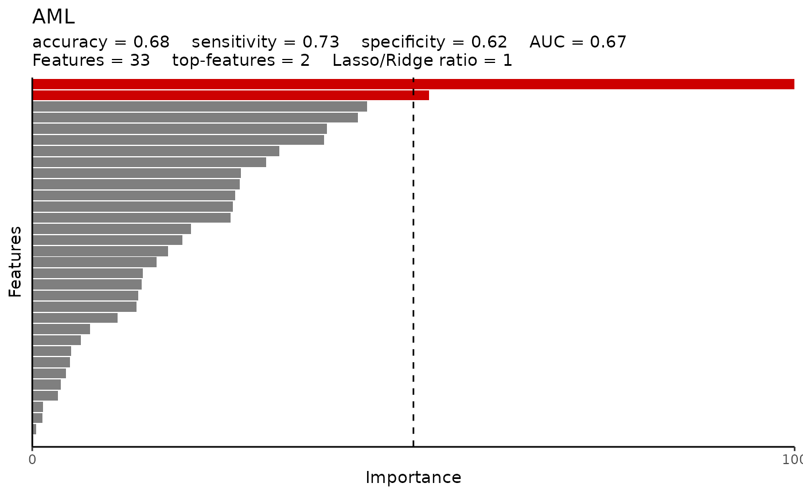
res$boxplot_res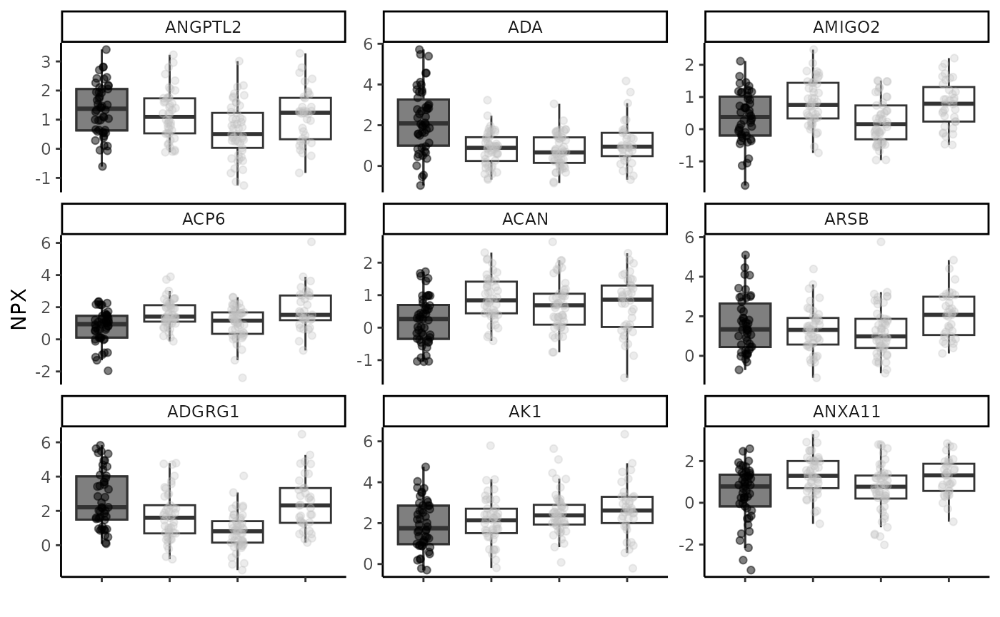
We can change several parameters in the do_rreg()
function. For example, we can change the number of cross-validation
folds, the number of grid points for the hyperparameter optimization,
the number of cores to use, the feature correlation threshold, and even
the type of regularized regression. For more information, please refer
to the documentation.
res <- do_rreg(wide_data,
metadata,
case = "AML",
control = c("CLL", "MYEL", "GLIOM"),
cv_sets = 8,
grid_size = 15,
ncores = 2,
cor_threshold = 0.7,
type = "elnet",
palette = "cancers12")
res$testfit_res$metrics
#> $accuracy
#> [1] 0.61
#>
#> $sensitivity
#> [1] 0.6
#>
#> $specificity
#> [1] 0.62
#>
#> $auc
#> [1] 0.69
#>
#> $conf_matrix
#> Truth
#> Prediction 0 1
#> 0 9 5
#> 1 6 8
#>
#> $roc_curve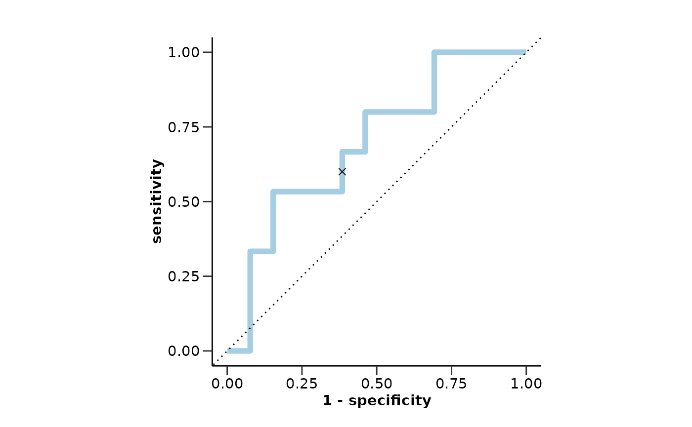
res$var_imp_res$var_imp_plot
res$boxplot_res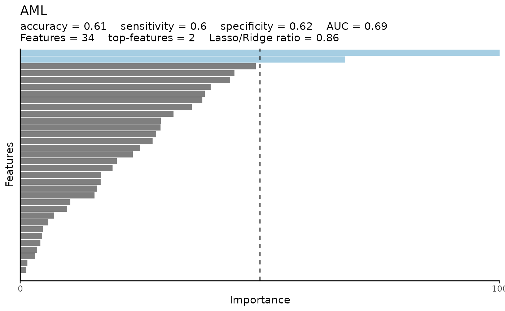
We can use a different variable to classify like Sex and
even a different algorithm like random forest via do_rf().
Do not forget to change the exclude_cols parameter to
exclude the Disease column instead of default
Sex.
res <- do_rf(wide_data,
metadata,
variable = "Sex",
case = "F",
control = "M",
exclude_cols = "Disease",
palette = "sex_hpa",
points = FALSE)
res$testfit_res$metrics
#> $accuracy
#> [1] 0.55
#>
#> $sensitivity
#> [1] 0.18
#>
#> $specificity
#> [1] 0.92
#>
#> $auc
#> [1] 0.74
#>
#> $conf_matrix
#> Truth
#> Prediction 0 1
#> 0 17 7
#> 1 75 85
#>
#> $roc_curve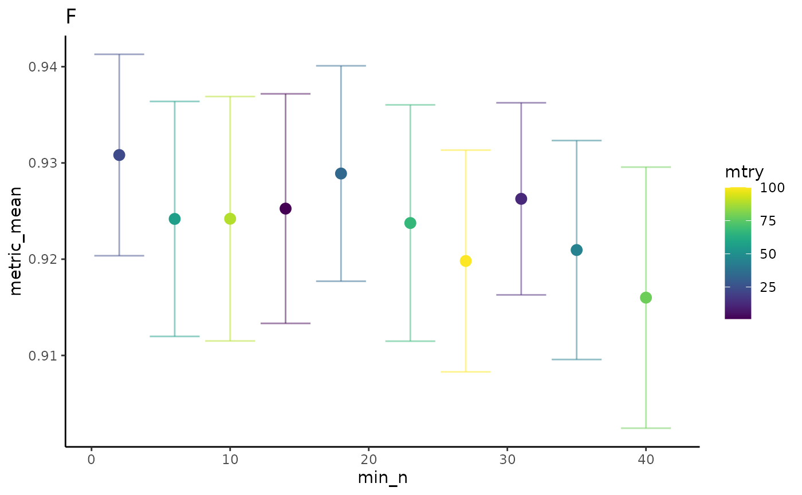
res$var_imp_res$var_imp_plot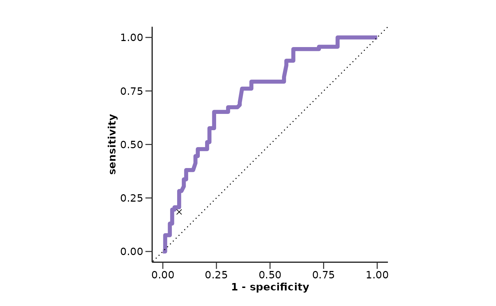
res$boxplot_res
If our data have a single predictor, we can use
do_lreg() instead of do_rreg() to perform a
logistic regression. Random forest can be used as it was for multiple
predictors. Let’s also change the ratio of the training and testing
sets.
one_pred_data <- wide_data |>
select(DAid, ANGPTL2) |>
na.omit()
res <- do_lreg(one_pred_data,
metadata,
case = "AML",
control = c("CLL", "MYEL", "GLIOM"),
ratio = 0.7,
palette = "cancers12")
res$metrics
#> $accuracy
#> [1] 0.57
#>
#> $sensitivity
#> [1] 0.53
#>
#> $specificity
#> [1] 0.6
#>
#> $auc
#> [1] 0.61
#>
#> $conf_matrix
#> Truth
#> Prediction 0 1
#> 0 8 6
#> 1 7 9
#>
#> $roc_curve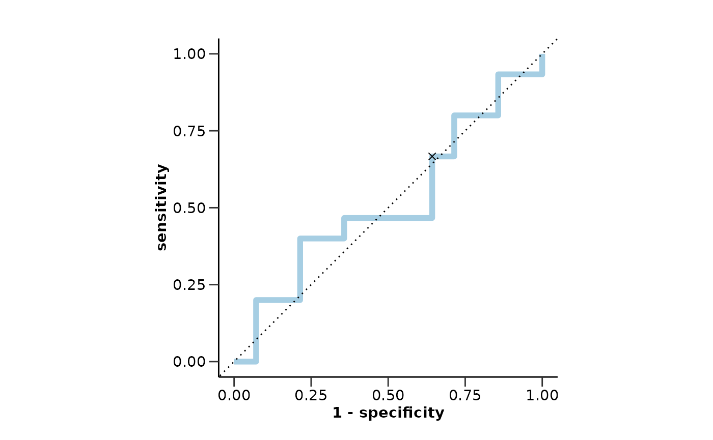
res$boxplot_res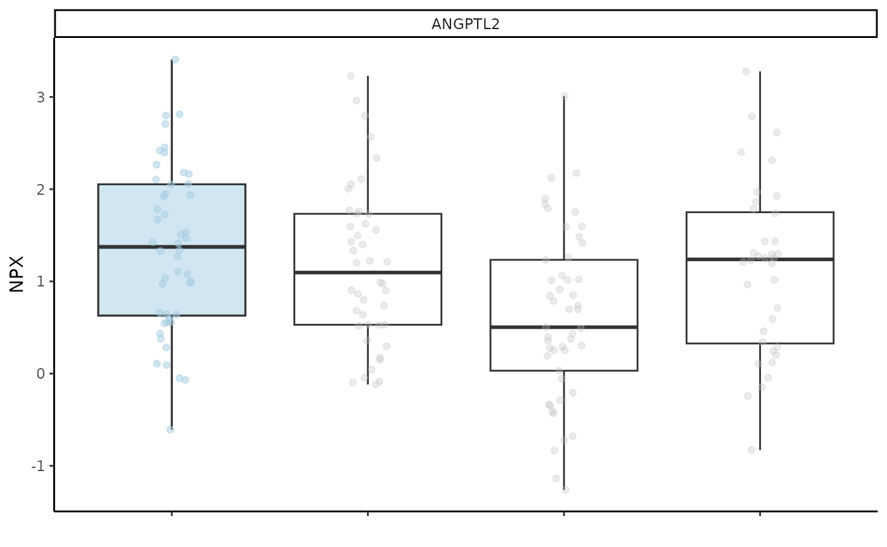
We can also do multiclassification predictions with all available
classes in the data via do_rreg_multi() and
do_rf_multi(). The parameters are similar with the binary
classification functions but in this case there are no case
and control arguments.
res <- do_rreg_multi(wide_data,
metadata,
type = "elnet",
palette = "cancers12")
res$auc
#> # A tibble: 12 × 2
#> Disease AUC
#> <chr> <dbl>
#> 1 AML 0.917
#> 2 BRC 0.694
#> 3 CLL 0.929
#> 4 CRC 0.608
#> 5 CVX 0.738
#> 6 ENDC 0.712
#> 7 GLIOM 0.955
#> 8 LUNGC 0.848
#> 9 LYMPH 0.625
#> 10 MYEL 0.839
#> 11 OVC 0.792
#> 12 PRC 0.357
res$auc_barplot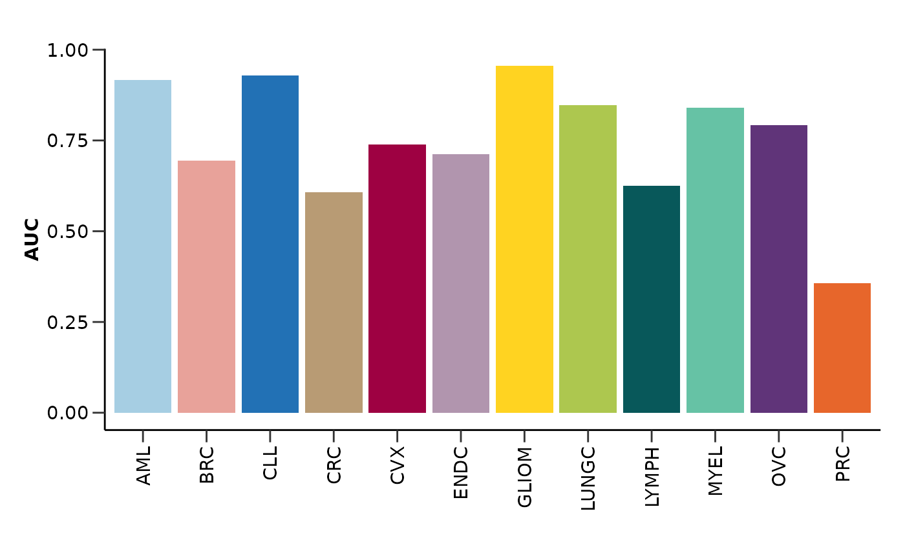
res$roc_curve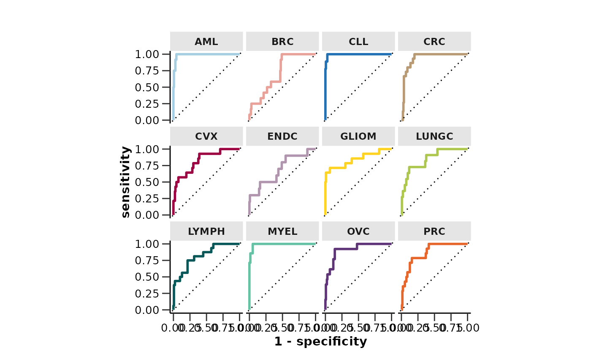
res$var_imp_res$var_imp_plot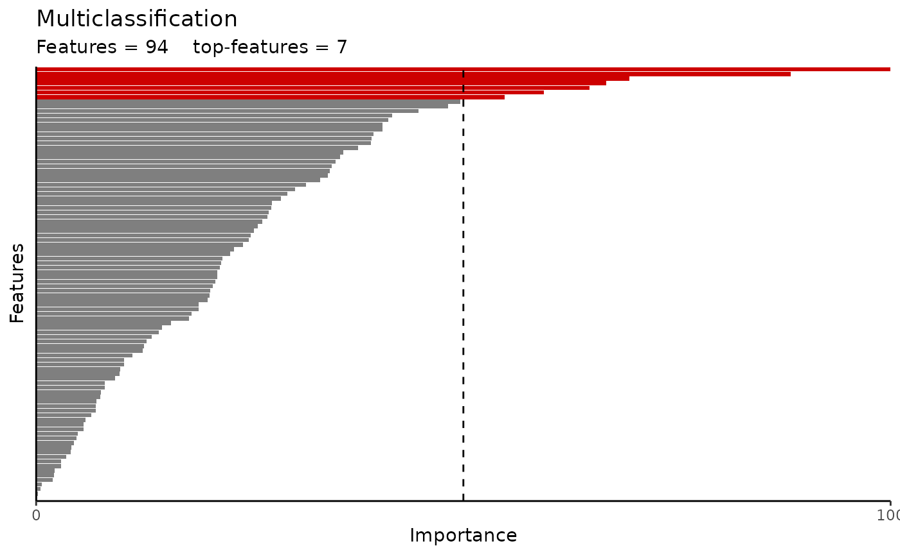
Finally, let’s use the plot_features_summary() to
summarize our model results. We can create models of different cases and
controls and compare them like we did in the Get Started vignette.
However, we can also compare different models. Let’s run two different
models for two different cases and summarize them.
ridge_aml <- do_rreg(wide_data,
metadata,
case = "AML",
control = c("CLL", "MYEL", "GLIOM"),
type = "ridge")
rf_aml <- do_rf(wide_data, metadata, case = "AML", control = c("CLL", "MYEL", "GLIOM"))
ridge_gliom <- do_rreg(wide_data,
metadata,
case = "GLIOM",
control = c("CLL", "MYEL", "AML"),
type = "ridge")
rf_gliom <- do_rf(wide_data, metadata, case = "GLIOM", control = c("CLL", "MYEL", "AML"))
res <- plot_features_summary(list("Ridge_AML" = ridge_aml,
"RF_AML" = rf_aml,
"Ridge_GLIOM" = ridge_gliom,
"RF_GLIOM" = rf_gliom))
res$features_barplot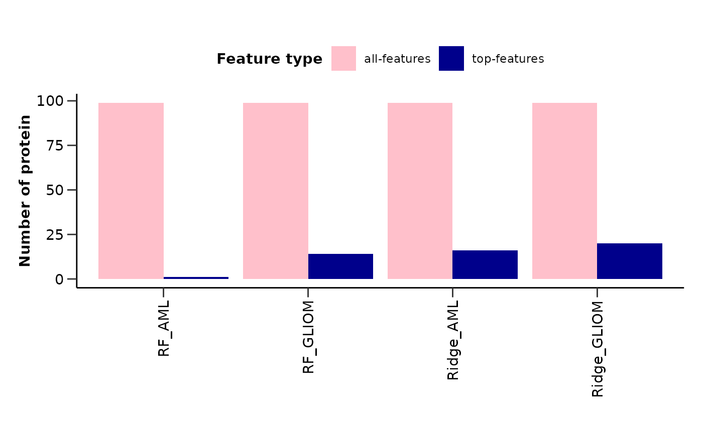
res$upset_plot_features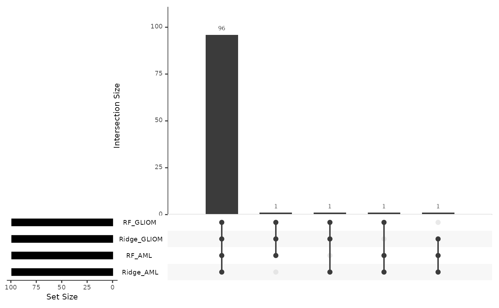
res$metrics_lineplot
From the last plot we can quickly see that the Ridge regression model works better for Glioma classification, while the Random Forest model works better for AML classification.
📓 Remember that these data are a dummy-dataset with fake data and the results in this guide should not be interpreted as real results. The purpose of this vignette is to show you how to use the package and its functions.